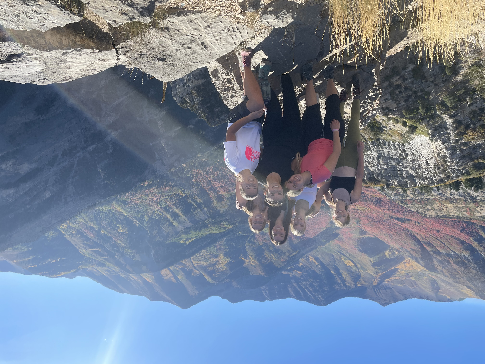
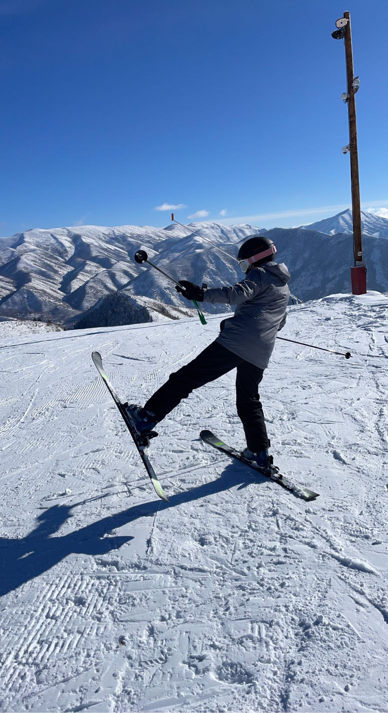
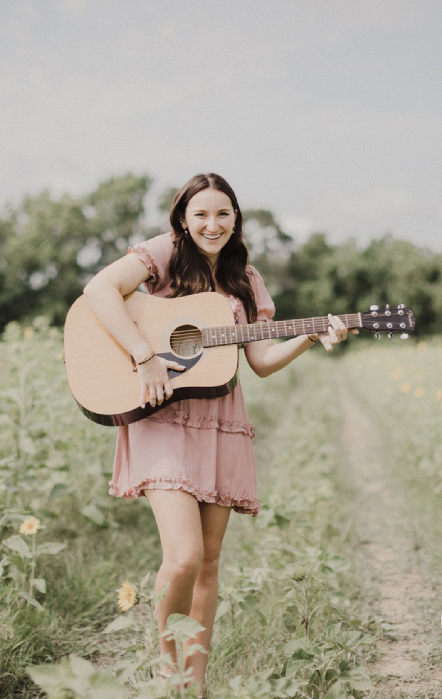
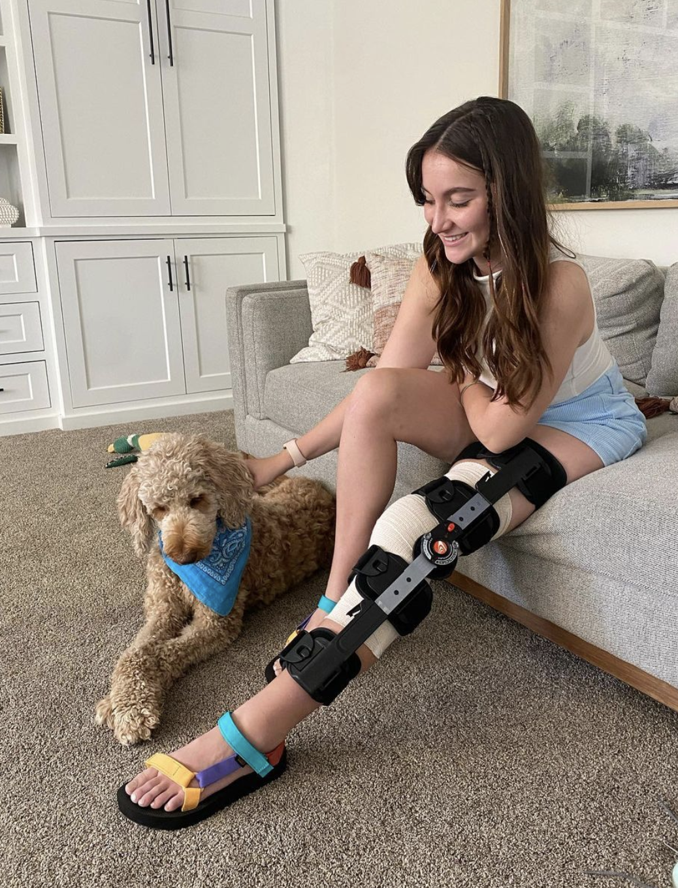

Merrit Foster
Hello! I'm Merrit
I'm a 19-year-old student currently attending BYU, originally from Southern Louisiana.
Outdoor Enthusiast
I have a deep love for the outdoors, whether it's hiking, fishing, or skiing. Exploring nature has always been a source of joy and inspiration for me, and it's something I've cherished growing up.
 
Musical Passion
Another passion of mine is playing the guitar. I not only enjoy playing, but I also have a growing collection of old guitars that I love to restore. Each guitar tells its own story, and it's a hobby that combines my love for music with a bit of craftsmanship.
Road to Recovery
This year, I faced a significant challenge with a torn ACL. While it has limited some of my usual activities, it has also allowed me to discover new interests. The recovery process has been a journey of resilience, and I've used this time to pick up fresh hobbies and explore different aspects of life.
Culinary Adventures
Learn more about what I've made here.
Despite the challenges, this period of recovery has opened doors to new experiences and interests, making this chapter of my life uniquely enriching.